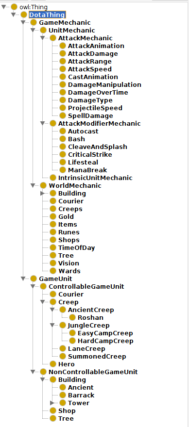
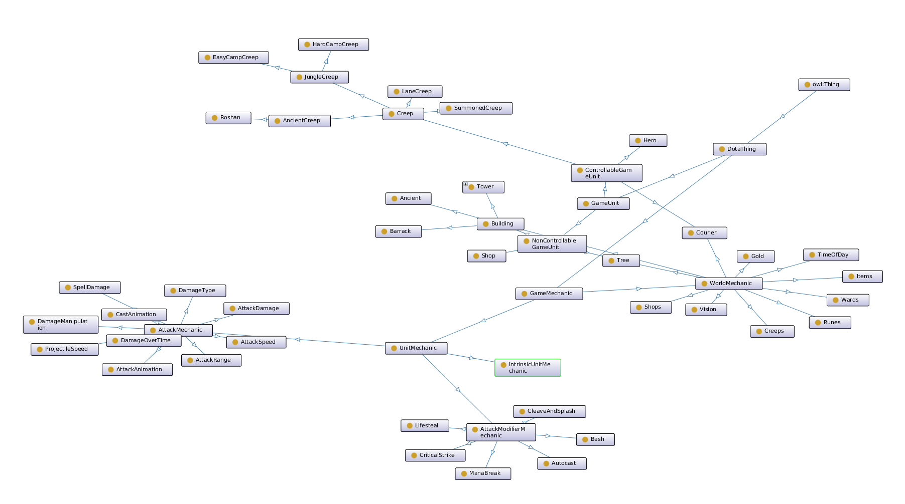
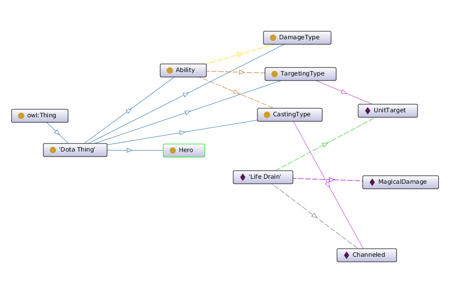

AM007
Building a Dota Ontology (Part 2):
Disclaimer
I am not a professional Dota player, just a fan of the game. The knowledge presented here about it is not official knowledge about the game, and is a mix of my perception of it after ~1200 hours playing it and crowdsourced Dota 2 wiki pages. Take it "as is".
Last time I wrote about this I was framing the domain, the problem to be solved and the overall goal of doing it via an ontology. Today I've got a brief update on the structures I am using to describe the world of Dota.
For a refresher, the idea is to model enough information to let a reasoner "figure out" why 2 characters have spells that work together. And we're starting by modeling Pugna's Life Drain and Treant Protector's Overgrowth.
I originally started out modeling a hierarchy that was "exhaustive". I tried to put as much stuff as I knew about Dota in it, following as closely as I could an original attempt at structuring this information done by the community at Gamepedia (see link in references).
This made me very quickly see that this sort of categorization may be good for general purpose ontologies that aim to describe, but have way too much information that I will likely not use for my very constrained purposes.
I'm not here to redo Gamepedia's work. I'm here to get a machine to help me keep up with the meta.
Anyway, the overall class hierarchy looked like this:

And the same hierarchy as a graph looked like this:

As you can see, its starting to get big, and its not even covering actual hero attributes, any spell or ability descriptors, or even matchmaking drafting mechanics.
So I scratched all that and started over the other way around. Instead of beginning from a hierarchy of classes, I'd begin with a single entity: Life Drain.
Now what exactly is Life Drain.
Life Drain is a targeted unit, channeled ability; it affects enemies and allies; it does magical damage; it has a maximum channeling time of 10 seconds; and it has an maximum cast range of 700 with a link break distance of 900.
The important part here is that from distance 0 to 900, Pugna can sap your life up to 10 seconds, potentially causing an instant kill.
Modeling this we will need:
- Life Drain as an entity
- A class of abilities that "Life Drain" belongs to
- A data property for its cast range
- A data property for its maximum channeling time
- A data property for its link breaking distance
- An object property for the type of targeting it has
- An object property for the type of casting it has
- An object property for the type of damage it makes
- Magical Damage as an entity
- A class of damage types that "Magical Damage" belongs to
- Targeted Ability as an entity
- A class of targeting types that "Targeted Ability" belongs to
- Channeled Ability as an entity
- A class of casting types that "Channeled Ability" belongs to
Lets start with this and see where it takes us.
First we'll start by saying that there's a class of thing that belongs to Dota, and we'll call it "DotaThing".
:DotaThing rdf:type owl:Class ;
rdfs:comment "A Thing in the Dota Ontology"@en .
Great, now we can make sure everything we create going forward belongs to this hierarchy, and thus if anyone ends up including this in their own ontology we are less likely to be polluting the global namespace. Good hygiene, really.
Then we'll just say what Life Drain means to us:
:LifeDrain rdf:type owl:NamedIndividual ;
:castingType :Channeled ;
:damageType :MagicalDamage ;
:targetingType :UnitTarget ;
:castRange "700"^^xsd:positiveInteger ;
:linkBreakDistance "900"^^xsd:positiveInteger ;
:maximumChannelingTime "10"^^xsd:positiveInteger .
Pretty nifty, right? It's pretty much the same thing we said above in English, but now encoded in this funky syntax. You can almost read this as a sentence. In fact I invite you to reread the paragraph and see the similarities.
NOTE: If this syntax is new to you, feel free to read it as
:key :value ;for the time being.
So far we've defined what Life Drain is, but we don't know much about these properties. In general programming languages are not particularly good at describing the descriptions of your data. E.g, you can't say "oh this particular property of this object or record should be described by this separate data structure". Instead we're bound to reifying our data structures to be able to describe them in an introspectable or extensible way.
Fortunately, OWL is equipped to handle this off the bat, since our properties are just more entities, and we can define them just like we defined our class of DotaThings, or the specific LifeDrain entity.
We will do so like this for the :damageType attribute, which we will consider
an Object Property, since we want to be able to talk about our Damage Type more
in the future, and thus will need some entities for it:
:damageType rdf:type owl:ObjectProperty ;
rdfs:domain :Ability ;
rdfs:range :DamageType .
And like this for the :castRange attribute, which we will consider a Datatype
Property, since the value will most likely just be numerical and not require
any more work:
:castRange rdf:type owl:DatatypeProperty ;
rdfs:domain :Ability ;
rdfs:range xsd:positiveInteger .
Saying this has one really important implication: Life Drain now must be an Ability.
Yes, we haven't really said that it was one in our formal description of it. We have just laid out a few properties and its values. We haven't even created a class for Ability yet! But because we have properties that expect their domain to be of the class Ability, if we say that LifeDrain has these properties then it must be also true that LifeDrain is an Ability. Logic.
One thing that is missing here is the definition of our :DamageType class. We
can't really know what it is, beacuse other than the :damageType object
property has it as a domain, we haven't said anything about it!
:DamageType rdf:type owl:Class ;
rdfs:subClassOf :DotaThing .
There we go. We can now infer that :MagicalDamage must be of type
:DamageType since that's the kind of values that can be used with the
:damageType property.
I'll skip ahead now through the rest of the properties, since they are very similar. You can see the state of this ontology after having modeled the rest of these properties and classes in here: Dota2.ttl at commit a5ffa5.
It is sort of hard to see from here how to embed in the ontology the knowledge that if a unit stops moving, then Life Drain will do its work just fine. Or the opposite, that if a unit _moves, then we can compute how long it will take for it to break the Life Drain link.
The napkin math goes: drain duration = (link break distance - current distance) / moving speed That's the number of seconds you'll sap their health.
So lets model Movement Speed and see where this takes us. It should be a property of game units, which we'll restrict to Heroes for the time being, and it should always be a positive integer.
:movementSpeed rdf:type owl:DatatypeProperty ;
rdfs:domain :Hero ;
rdfs:range xsd:positiveInteger .
Now we have all the core moving pieces. We know that Life Drain has a distance limit, we know that heroes have a movement speed. This should be enough to show that if we can make the movement speed go down, then that is good for Life Drain.
Except that while obvious to us, this link hasn't been established yet in the ontology.
For this I'd like to introduce the idea of affinity.
In a sense, we know that :movementSpeed must have affinity with
:linkBreakDistance. The lower the movement speed, the better this is for
anything that has a :linkBreakDistance.
If we reify this idea, we can then refer to these affinities as things in the ontology instead of something encoded in additional code, which can gives us a lot of very nice properties. Lets see what options do we have here:
-
We can model Affinities as a hierarchy of properties: every property X will have its related property "hasAffinityWithX" property, that other properties can be subproperties of. This way if we know a Hero has any property, we can find what are the properties it comes from. A drawback being that we will have an explosion of complexity in the space of properties (at least twice as many properties as we had before + whatever number of relationships we establish as affine).
-
We can model a class Affinity where every affinity between things will be a palpable entity of that class. This entity will then be able to model more complex affinities (e.g, across more than 2 properties). A drawback is that in OWL a property cannot have for value another property, so we'll have to lift properties to entities, and model those under a class like "HeroAttribute". That means we'll have as many HeroAttribute entities as we have attribute properties (e.g, :movementSpeed property and :MovementSpeed entity).
The interesting thing about it is that this Affinity, however we model it, now lets us forget about Abilities entirely. Instead we now care about how a particular Hero attributes are affected.
This feels like a much more general approach to defining synergy, and it may extend beyond hero abilities and to creep abilities, tower fortification glyphs, items, and other game mechanics.
In the coming weeks I'll explore these modeling approaches and see which one makes it easier to establish the relationship between attributes.
The current status of the ontology can be seen here:

And you can read the Turtle file here: Dota2.ttl at 72b8984.
References